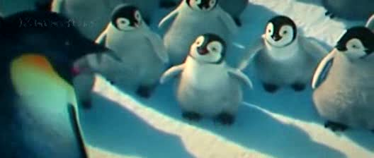
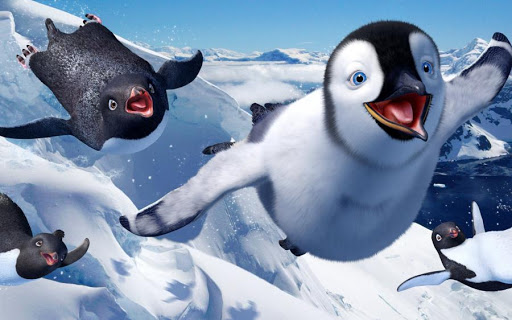

Happy Feet è un film del 2006 diretto da George Miller. Il film d'animazione 3D uscì nelle sale cinematografiche statunitensi il 17 novembre 2006, mentre in quelle italiane il 1º dicembre 2006. Nel 2011 è uscito il seguito Happy Feet 2, sempre diretto da George Miller.

Cover del film
Trama
In Antartide, tra i pinguini imperatore, tutti sanno cantare. Il piccolo Mambo, però, non ne ha la capacità,
ma ha un grande talento nel ballare il tip-tap. Un giorno Mambo incontra un gruppo di gabbiani stercorari:
alla zampa di uno di loro è stato attaccato un anello giallo dagli "alieni" (cioè gli umani). La sua vita
cambia quando si innamora di Gloria, che dimostra grande talento nel cantare e viene accolta da tutti i
pinguini, Mambo compreso. Però quando Gloria si esibisce in uno spettacolo, Mambo, senza volerlo, glielo
rovina e viene allontanato. La mattina seguente Mambo viene inseguito da una foca leopardo, ma riesce a
salvarsi, e si imbatte in alcuni pinguini di Adelia spagnoli che apprezzano il suo talento di ballerino.
Insieme vanno dal loro guru, Adone, a cui Mambo chiede di sapere tutto sugli alieni.
Mambo, tornato fra i suoi simili, convince Gloria e tutti i pinguini a partecipare ad un enorme ballo di
gruppo, ma questo fa infuriare Noè, il loro pseudo-sacerdote, che convince tutti a ritenere che la carestia
che incombe sia causata dal ballo. Memphis, padre di Mambo, rivela inoltre a Norma Jean, la madre, che Mambo
è diventato strano perché quando era nell'uovo era caduto; cerca anche di convincerlo a smettere di ballare
e cominciare a cantare, ma poiché rifiuta Mambo viene esiliato. Prima di partire Mambo afferma a Noè che
scoprirà tutto riguardo agli "alieni" e alla carestia di pesce, e ritornerà con la spiegazione.
Mambo parte quindi alla ricerca degli umani insieme ai suoi amici; questo porterà il giovane Mambo a una
serie di avventure incredibili che lo porteranno alla conoscenza assoluta del mondo: una scivolata
mozzafiato nei freddi ghiacciai, l'attraversamento di una tormenta di neve potentissima, un pericoloso
faccia a faccia con le orche marine e infine il tentativo disperato di ritrovare gli alieni e salvare tutti
quanti. Ritrovato svenuto su una spiaggia, finisce in un acquario gigantesco pieno di pinguini in una grande
città, dove viene acclamato dal pubblico per la sua bravura nel tip-tap.
Alla fine riesce a mantenere la parola data e a ritornare nella sua colonia, ma con un apparecchio
trasmittente attaccato alla schiena. Improvvisamente il segnale si attiva e alcuni umani lo rintracciano,
trovandolo con un elicottero. Davanti ai nuovi arrivati tutta la colonia si mette a ballare freneticamente.
Poco dopo finiscono tutti in televisione e i politici vietano immediatamente la pesca antartica. È il grande
trionfo di Mambo.
Il film si conclude con un ballo colossale di milioni di pinguini, compreso Noè e gli anziani.
Personaggi
Mambo e gli altri
- Mambo: è il protagonista. Balla il Tip Tap ed è incapace di cantare. A causa di un incidente, nella fase adulta presenta ancora il piumaggio da pulcino, che perderà a poco a poco durante il film. Si innamora della sua amica di infanzia, Gloria da cui nel sequel Happy Feet 2 avrà un figlio di nome Erik, ed è doppiato da Elijah Wood
- Gloria: è la migliore amica di Mambo. Cerca sempre di stare dalla parte di Mambo mentre gli atri pinguini lo deridono, ed è doppiata da Brittany Murphy.
- Ramon: è un Pinguino di Adelia che presenta una cresta marrone chiaro sulla testa. È di presunta origine spagnola ed è il capo del gruppo degli "Amigos" ; è doppiato da Robin Williams. Nel film canta "My Way" di Frank Sinatra.
- Memphis: è il padre di Mambo, ed è la forma "pinguinesca" di Elvis Presley in cui, all'inizio del film, canta un suo celebre brano: "Heartbreak Hotel" (cantato da Hugh Jackman). A causa di una sua distrazione, gli casca l'uovo di Mambo nella neve gelida durante il periodo di cova, facendo nascere il piccolo "diverso" dagli altri. Si terrà sempre distaccato dall'atteggiamento insolito del figlio, anche se a fine film si scoprirà che anche a lui, un tempo, piaceva ballare.
- Norma Jean: è la madre di Mambo. È una chiara citazione a Marilyn Monroe di cui presenta il classico neo che la distingueva.
- Noe l'anziano: è il capo dei pinguini imperatore. Non accetta il fatto che Mambo non sappia cantare ma ballare il tip-tap, e soprattutto non crede all'esistenza degli umani. Ma alla fine dovrà ricredersi e infine accetterà che Mambo abbia questo talento speciale che lo rende unico nella sua colonia.
- Foca Leopardo: all'inizio inseguirà Mambo per mangiarselo, ma poi ci rinuncia dopo aver sbattuto il muso contro il ghiaccio ed essersi stancata di inseguirlo.
Colonna sonora
Le canzoni utilizzate sono Heartbreak Hotel di Elvis Presley, I Wish di Stevie Wonder, Somebody to Love dei
Queen, Do It Again dei Beach Boys, My Way di Frank Sinatra, Kiss di Prince che ha acconsentito a rendere più
"pinguinesco" il testo della canzone.
Dal film sono state tratte due colonne sonore, una con le canzoni del film e una con i sottofondi musicali
scritti da John Powell.
Riconoscimenti
Ne ha avuti tanti, fidati
Versione in 4D
Happy Feet 4-D Experience è un cortometraggio di 12 minuti in 4D che ripropone alcune delle scene essenziali del film, accompagnate dagli effetti speciali come vento, acqua, nebbia e movimento del sedile. Prodotto dalla SimEx-Iwerks, la versione 4D è uscita a marzo 2010 al Drayton Manor Theme Park. Altri parchi che hanno proposto questo cortometraggio sono stati il Sea World (2010-2011), Shedd Aquarium (2010–2012), il Moody Gardens (2010-2011), il Nickelodeon Suites Resort, e l'Adventure Aquarium.. In Italia è stato distribuito unicamente dal parco divertimenti Zoomarine (2015-2016).